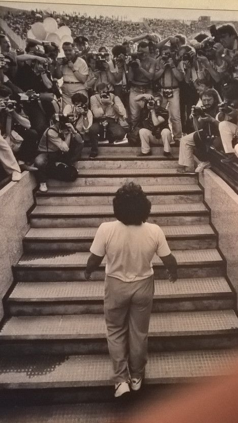

STORYS
-
On July 5th, 1984, the San Paolo stadium in Naples is packed as it has never been. 80.000 paying spectators crowded the stands, and it’s not for a football match. Gathered despite the hellish heat, the city waits to greet a short Argentine football player who the president of Napoli Football Club bought from the Barcelona team. That player is not just a player, as the good ones are found in more or less every team; nor is it simply one of those great players acquired with the reopening of borders. No, he, the Argentine footballer short in stature, is Diego Armando Maradona. The atmosphere is messianic, everyone wants to see him, each of the spectators came to witness with their own eyes the player’s bodily existence and that it is not one of those miracles that Naples would need but never actually come

-
Brazil and Italy made it to the final of the 1970 World Cup and were set to battle for the right to take the Jules Rimet trophy home as a prize for their third World Cup title. The score was 0-0 when Rivelino crossed the ball high into the box, Pele jumped with the defender, and like a hummer bird, or a helicopter, and certainly better than Dada, he stopped in mid-air, winning the aerial challenge and heading home to open the score. In the celebration, he jumped over Jairzinho, hugging him as he closed his fist to show his determination and joy after scoring Brazil’s 100th goal in the World Cup. The image of Pele's celebration, with his wide smile and the arms outstretched, will always be one of the iconic moments in World Cup history.

The final pitched Brazil against Germany. It was an odd quirk that the two most successful nations in the competition’s history at that point (Brazil had four wins to Germany’s three) had never before met at a World Cup. Here they were, eyeball to eyeball, in the final. The thrills of the three Rs versus the defiance of Oliver Kahn, who had fetched the ball out of his net only once en route to the final. The final would belong to one man. Ronaldo was one v one against Kahn three times in the first half but found no way through. Momentum swung in the second half with a pair of clinical finishes to take his tournament total to eight. With that came the golden boot, the World Cup trophy, and deliverance. At the end of it all the tears flowed.

-
Zidane had given France the lead in the final in the most audacious fashion. There cannot be too many players who would have the confidence and audacity to successfully execute a Panenka in a World Cup final but Zidane did. Deep in extra-time he almost doubled his goal count for the game.All the beauty and brilliance of his play in the knockout stages melted away and what was left was his anger and aggression. “I tried not to listen to him but he repeated them several times,” said Zidane. “Sometimes words are harder than blows. When he said it for the third time, I reacted.”

-
European football’s biggest match lost its biggest name midway through the first half of a cagey final on the outskirts of the French capital. Ronaldo went down under Dimitri Payet’s ninth-minute challenge and was twice forced off to receive treatment on the touchline. However determined Ronaldo was to lead Portugal to glory, his left knee could cope no more and he was carried off on a stretcher midway through the first half. Ronaldo was in tears but he returned just before extra time to address his weary teammates. They seemed to be inspired by Ronaldo’s re-emergence and the Real Madrid forward was soon leaping off the bench in celebrations.

-
Lionel Messi starting intently at the World Cup trophy in the aftermath of Argentina's defeat to Germany in the final was voted as the best sports photograph of 2014. The Argentine led his side to the showpiece match in Brazil, and picked up the Golden Ball award as best player in the tournament, but was ultimately on the losing side as Germany won 1-0 to lift the trophy. The image perfectly captures the Barcelona superstar with his eyes fixed on the silverware, amid the frantic scenes around him as the German players prepared to lift the Cup. The photo was titled 'The Final Game'.

-
"A little with the head of Maradona and a little with the hand of God.” It is perhaps the most famous description of any goal, and it was applied by Diego Maradona to the effort captured above. Replays, of course, later proved that his head had been a less significant part of the equation than he initially suggested. “It was probably the best piece of fraud you will ever see - and he got away with it," lamented Terry Butcher, one of the England defenders left to protest in vain. Butcher would, of course, go on to be beaten not once but twice en route to Maradona’s magnificent, much-celebrated second in that 1986 quarter-final. But for all that latter goal’s unparalleled brilliance, 'the hand of God’ has proved just as enduring.

-
The Barcelona and Spain icon says he endured the hardest phase of his life following the death of close friend Dani Jarque in 2009 Andres Iniesta says scoring the winning goal in the 2010 World Cup final helped him recover from depression and move on from the hardest time in his life. Iniesta had suffered terribly following the death of his close friend Dani Jarque in 2009. The former Espanyol midfielder died at the age of just 26 following a heart attack. When the Barcelona icon, now playing in Japan with Vissel Kobe, scored the decisive goal in South Africa, he revealed an undershirt reading “Dani Jarque: siempre con nosotros”, meaning ‘always with us’.